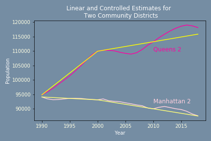

Per Capita Refuse
In order to control for changes in population, the bulk of our analysis considers per-capita refuse production in tons per person per year. However, obtaining population estimates with which to compute per-capita refuse production was not straightforward. The only data available were decennial census measurements of community-district level population, as well as annual intercensal estimates of borough population. To compute per-capita refuse production on the community-district level, we used scaled borough-level intercensal estimates to match our community-district estimate totals in census years. Then, we made estimates of community-district level population in between census years by assuming linear rates of change between census measurements. Finally, we adjusted our linear estimates by controlling to the re-scaled borough-level intercensal data. Below, we include our linear (yellow) and final controlled (pink) estimates over time for two community districts. For a more detailed discussion of our methods, visit github.

During the observed years of 1992-2018, we see that per capita refuse declined in all five boroughs. We observe an increase in per capita refuse in all five boroughs during the years 2000 through 2003. These spikes in deviation do not negate our findings of an overall decrease throughout the time period examined.

Visualizations